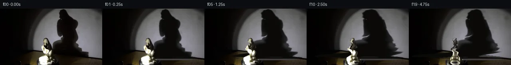
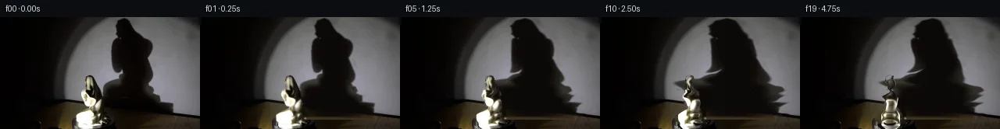
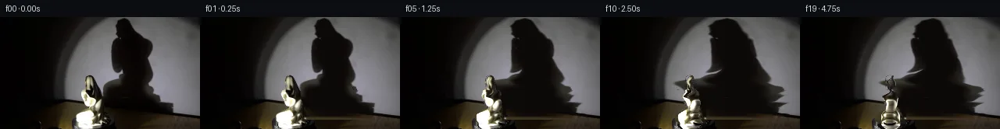
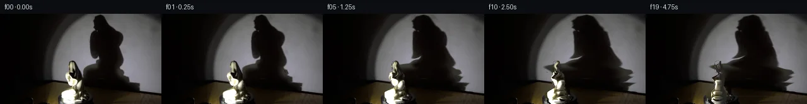
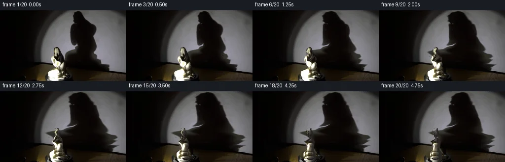
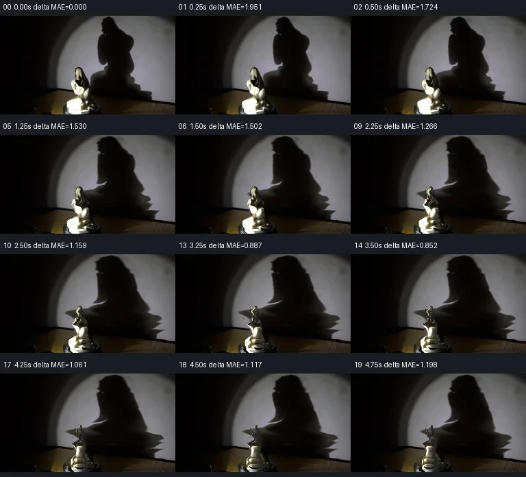

V0 · 初版
2026-11-05T05:24:50.651773+00:00 · RGB 3d90000063fe
![]()
Observable Generation Trace
把最终像素视频、Harness 冻结的每轮候选、真实工具事件和 Agent 自述放在同一页。可观测证据与模型自述分开标记，避免把“模型说它检查过”误当成真实工具调用。
![首帧]()
Static locked-off single-shot with fixed frame throughout filmed with constant framerate in real-time. The scene shows a realistic scientific demonstration. The scene only contains the described setup and actions. The small porcelain statue sits on the black, clockwise-rotating platform, and the spotlight points toward the porcelain statue. The small porcelain statue rotates clockwise on the black platform while the spotlight casts a large shadow on the wall behind it.
首帧显示在左侧播放器初始画面。Track 权限、隔离和 tensor 一致性来自 run manifest，而不是 METHOD.md。
默认勾选初版和最终版；可选其他版本一起同步播放。仅检查图更新的连续重复快照已合并，回退旧视频仍保留为一次修订。
Observable events
来源：events.jsonl + run manifest
此 Track 禁止读取输出图片。逐轮预览由外部 Harness 自动冻结，只用于事后审计，生成 Agent 当时看不到这些页面。
Frozen candidates
每张图来自该 round 的真实 00 / 01 / 05 / 10 / 19 帧

pixels fccbd344d400189d · code a1492acf59467f4a
--- previous/generate.py
+++ current/generate.py
@@ -0,0 +1,302 @@
+"""Local pixel synthesis: inferred elliptical sections, inverse maps, and relighting.
+No external assets, learned models, or rendering engines. See METHOD.md.
+"""
+from pathlib import Path
+import json
+import numpy as np
+from PIL import Image, ImageDraw
+from scipy.ndimage import gaussian_filter, gaussian_filter1d, map_coordinates, distance_transform_edt
+from scipy.interpolate import PchipInterpolator
+from artifact_io import save
+
+ROOT = Path(__file__).resolve().parent
+W, H, S = 256, 144, 3
+Y, X = np.mgrid[:H, :W].astype(float)
+first = np.array(Image.open(ROOT/'first_frame.png').convert('RGB'))
+photo = first.astype(float)
+gray = photo.mean(2)
+
+# Hand measured foreground silhouette. Coordinates follow the original folds,
+# not the dark cast shadow immediately behind its right-hand side.
+profile = np.array([
+[74.7,114.1,116.1],[75.5,112.0,117.7],[77,109.7,119.0],
+[80,109.8,121.0],[83,110.0,122.5],[86,110.3,123.7],
+[89,110.5,125.0],[92,109.7,126.7],[93.5,105.0,127.5],
+[95.5,103.4,128.8],[98,103.0,129.8],[100,103.5,130.1],
+[102,104.5,129.5],[104,105.5,128.4],[106,106.7,128.8],
+[108,107.4,130.0],[110,108.0,130.0],[113,109.4,129.5],
+[115,112.0,128.8],[117,111.5,128.0],[119,107.0,126.8],
+[121,103.5,126.0],[123,99.5,128.5],[125,96.8,129.0],
+[128,96.5,128.0],[130,96.7,128.5],[133,97.2,132.0],
+[135,99.0,135.0],[137,99.5,134.0],[139,99.5,130.0],
+[141,100.7,128.0],[143.5,104.0,119.0],[146,110,116]],float)
+left_fn=PchipInterpolator(profile[:,0],profile[:,1])
+right_fn=PchipInterpolator(profile[:,0],profile[:,2])
+left=left_fn(Y);right=right_fn(Y)
+obj_mask = (X>=left-.7)&(X<=right+.7)&(Y>=74)
+obj_alpha = np.minimum(np.clip(X-left+.65,0,1),np.clip(right-X+.65,0,1))*np.clip((Y-74.3)/.7,0,1)
+
+# Mask is drawn from initial scene measurements, entirely local.
+shadow_poly=[(157,0),(151,2),(148,6),(147,15),(148,23),(147,26),
+ (142,29),(140,38),(141,49),(142,60),(145,68),(152,72),
+ (151,78),(145,82),(136,86),(131,91),(130,99),(127,105),
+ (126,119),(126,128),(231,129),(225,120),(223,109),(207,107),
+ (203,100),(193,96),(190,90),(192,84),(196,77),(197,72),
+ (195,64),(192,56),(192,51),(196,47),(198,39),(197,33),
+ (192,28),(184,24),(175,18),(171,10),(166,2),(163,0)]
+pm=Image.new('L',(W,H));ImageDraw.Draw(pm).polygon(shadow_poly,fill=255)
+shadow_region=np.array(pm)>0
+shadow_dist=distance_transform_edt(~shadow_region)
+remove_shadow=shadow_dist<4
+wall_line=104.5+.119*(X-80)
+wall = Y < wall_line
+
+# A fourth-degree smooth lit-wall fit supplies only the missing wall pixels.
+# Exclude the dark halo, statue, cast shadow, and tabletop from fit data.
+fitmask=(X>=98)&(X<=253)&wall&~remove_shadow&~obj_mask&(gray>72)
+xx=(X-175)/80;yy=(Y-62)/65
+terms=[xx**i*yy**j for i in range(5) for j in range(5-i)]
+design=np.stack(terms,-1)
+coefs=np.linalg.lstsq(design[fitmask],photo[fitmask],rcond=None)[0]
+wall_fit=np.einsum('hwk,kc->hwc',design,coefs)
+wall_fit=np.clip(wall_fit,55,185)
+fit_res=photo-wall_fit
+fit_rmse=np.sqrt(np.mean(fit_res[fitmask]**2,axis=0))
+
+# Weak stationary photographic grain reconstructed from adjacent illuminated wall.
+# Texture remains locked to the wall, and never changes with time.
+noise=photo-gaussian_filter(photo,(1.1,1.1,0))
+shift_noise=np.roll(noise,72,axis=1)
+wall_fit+=np.clip(shift_noise,-2,2)*.45
+clean=photo.copy()
+# At the table boundary, extrapolate the photographed tabletop from the right.
+# The broad lower wall shadow must not brighten the tabletop like a wall.
+for y in range(H):
+ wall_missing=remove_shadow[y]&wall[y]
+ clean[y,wall_missing]=wall_fit[y,wall_missing]
+ floor_missing=remove_shadow[y]&~wall[y]&(X[y]>135)
+ if np.any(floor_missing):
+ # Table color trend from x=229..255 at this height, source texture kept.
+ ids=np.arange(230,256)
+ coef=np.polyfit(ids,photo[y,ids],1)
+ vals=X[y,:,None]*coef[0]+coef[1]
+ vals=np.clip(vals,12,65)
+ clean[y,floor_missing]=vals[floor_missing]
+
+# Reconstruct the small area hidden by the porcelain, separating wall/table.
+# Use a smooth local interpolation for table pixels between flanking strips.
… diff truncated; 215 more lines …
pixels 93edb60e6550670b · code 342453040357517a
--- previous/generate.py
+++ current/generate.py
@@ -76,12 +76,16 @@
clean[y,wall_missing]=wall_fit[y,wall_missing]
floor_missing=remove_shadow[y]&~wall[y]&(X[y]>135)
if np.any(floor_missing):
- # Table color trend from x=229..255 at this height, source texture kept.
- ids=np.arange(230,256)
- coef=np.polyfit(ids,photo[y,ids],1)
- vals=X[y,:,None]*coef[0]+coef[1]
- vals=np.clip(vals,12,65)
+ # Interpolate the illuminated tabletop between unoccluded left/right.
+ lval=photo[y,82:93].mean(0)
+ rval=photo[y,234:254].mean(0)
+ q=np.clip((X[y]-90)/155,0,1)[:,None]
+ vals=np.clip((1-q)*lval+q*rval,22,65)
clean[y,floor_missing]=vals[floor_missing]
+
+# A recovered lit background must be no darker than the observed shadow.
+# This prevents negative attenuation from making bright speckles disappear.
+clean[remove_shadow&~obj_mask]=np.maximum(clean[remove_shadow&~obj_mask],photo[remove_shadow&~obj_mask])
# Reconstruct the small area hidden by the porcelain, separating wall/table.
# Use a smooth local interpolation for table pixels between flanking strips.
@@ -107,14 +111,17 @@
shadow_floor=np.array([10.,9.4,7.5])
bg_gray=clean.mean(2)
darkgray=shadow_floor.mean()
-alpha=np.clip((bg_gray-gray)/np.maximum(bg_gray-darkgray,1),0,1)
-alpha*=remove_shadow
-alpha[obj_mask]=0
-alpha[Y>=128]=0
+alpha_rgb=np.clip((clean-photo)/np.maximum(clean-shadow_floor,1),0,1)
+alpha_rgb*=remove_shadow[:,:,None]
+alpha_rgb[obj_mask]=0
+alpha_rgb[Y>=128]=0
+alpha=alpha_rgb.mean(2)
# Alpha profile information is measured only on the wall, where it is reliable.
shadow_left=np.full(H,np.nan);shadow_right=np.full(H,np.nan)
for y in range(1,125):
- ids=np.flatnonzero((alpha[y]>.6)&(np.arange(W)>125)&(np.arange(W)<230)&wall[y])
+ # Use the photographed dark contour, including the portion on the table.
+ # A wall-only mask truncates the left silhouette at the plane intersection.
+ ids=np.flatnonzero((gray[y]<42)&remove_shadow[y]&~obj_mask[y]&(np.arange(W)>125)&(np.arange(W)<230))
if len(ids)>2:
shadow_left[y]=ids[0]-.5;shadow_right[y]=ids[-1]+.5
valid=np.isfinite(shadow_left)
@@ -221,8 +228,8 @@
deptht=-scx*np.sin(phase)+scz*np.cos(phase)
sourcey=hy-.10*(deptht-depth0)
coords=np.array([sourcey,sourcex])
- a=map_coordinates(alpha,coords,order=1,mode='constant',cval=0)
- a=gaussian_filter(a,.25*S)
+ a=np.stack([map_coordinates(alpha_rgb[:,:,c],coords,order=1,mode='constant',cval=0) for c in range(3)],-1)
+ a=gaussian_filter(a,(.13*S,.13*S,0))
# The shadow is clipped against the stationary wall/table plane boundary.
# Lower part remains darker on the tabletop, as in the source photograph.
return np.clip(a,0,1),dict(center=center,width=width)
@@ -231,11 +238,11 @@
def render(theta):
sh,si=cast_shadow(theta)
- bg=cleanhi*(1-sh[:,:,None])+shadow_floor*sh[:,:,None]
+ bg=cleanhi*(1-sh)+shadow_floor*sh
color,oa,oi=camera_surface(theta)
out=bg*(1-oa[:,:,None])+color*oa[:,:,None]
down=out.reshape(H,S,W,S,3).mean((1,3))
- return down,oa,sh,oi,si
+ return down,oa,sh.mean(2),oi,si
# Anchor the decomposition against the actual supplied frame. The subpixel
# reconstruction residual is retained only at matching original surface pixels.
@@ -264,7 +271,7 @@
'object_alpha_area':float(oa_low.sum()),'shadow_alpha_area':float(sh_low.sum()),
'object_centroid':[float((oa_low*X).sum()/oa_low.sum()),float((oa_low*Y).sum()/oa_low.sum())],
'shadow_centroid':[float((sh_low*X).sum()/sh_low.sum()),float((sh_low*Y).sum()/sh_low.sum())],
- 'head_projected_width':float(interp(rx,81)*2*np.cos(angle)**2 + interp(rz,81)*2*np.sin(angle)**2),
+ 'head_projected_width':float(2*np.sqrt((interp(rx,81)*np.cos(angle))**2 + (interp(rz,81)*np.sin(angle))**2)),
'shadow_profile_width_y40':float(si['width'][40*S,168*S]*2)})
frames=np.array(frames,dtype=np.uint8)
save(frames,ROOT)
@@ -299,4 +306,4 @@
(ROOT/'.tmp'/'numeric_checks.json').write_text(json.dumps(checks,indent=2))
print(json.dumps({k:v for k,v in checks.items() if k!='frames'},indent=2))
print('Profile diagnostics:',json.dumps({'rx_range':[float(rx.min()),float(rx.max())], 'rz_range':[float(rz.min()),float(rz.max())], 'cz_range':[float(cz.min()),float(cz.max())]}))
-print('Frame geometry:',json.dumps(metadata,indent=2))
+print('Frame geometry sample:',json.dumps([metadata[k] for k in [0,1,5,10,15,19]],indent=2))
pixels d28ee9ac4416e519 · code 0adf90b4345701d9
--- previous/generate.py
+++ current/generate.py
@@ -10,7 +10,7 @@
from artifact_io import save
ROOT = Path(__file__).resolve().parent
-W, H, S = 256, 144, 3
+W, H, S = 256, 144, 1
Y, X = np.mgrid[:H, :W].astype(float)
first = np.array(Image.open(ROOT/'first_frame.png').convert('RGB'))
photo = first.astype(float)
pixels 3c0327fff000b1af · code 8fe9c8b6acd96b83
--- previous/generate.py
+++ current/generate.py
@@ -108,13 +108,13 @@
# Extract photographed wall shadow as attenuation over the reconstructed wall.
# Preserve its soft edge and warm residual illumination.
-shadow_floor=np.array([10.,9.4,7.5])
+shadow_floor=np.array([2.0,1.8,1.3])
bg_gray=clean.mean(2)
darkgray=shadow_floor.mean()
alpha_rgb=np.clip((clean-photo)/np.maximum(clean-shadow_floor,1),0,1)
alpha_rgb*=remove_shadow[:,:,None]
alpha_rgb[obj_mask]=0
-alpha_rgb[Y>=128]=0
+alpha_rgb[Y>=134]=0
alpha=alpha_rgb.mean(2)
# Alpha profile information is measured only on the wall, where it is reliable.
shadow_left=np.full(H,np.nan);shadow_right=np.full(H,np.nan)
@@ -155,7 +155,9 @@
# Continuous row interpolation avoids any seam between upper and lower shape.
def interp(v,y):return np.interp(y,rows,v)
-# Supersampling and inverse visible-surface calculations are numerical pixel ops.
+# Inverse visible-surface calculations are numerical pixel operations.
+# Native-grid texture sampling preserves the supplied photograph's sharp detail;
+# a one-pixel analytic coverage ramp handles the moving silhouette edge.
hy,hx=np.mgrid[:H*S,:W*S].astype(float)
hy=(hy+.5)/S-.5;hx=(hx+.5)/S-.5
rxh=interp(rx,hy);rzh=interp(rz,hy);cxh=interp(cx,hy);czh=interp(cz,hy)
@@ -206,8 +208,16 @@
spec0=np.maximum(nx*halfv[0]+nz*halfv[1],0)**24
spect=np.maximum(nxw*halfv[0]+nzw*halfv[1],0)**24
color=np.clip(tex*ratio[:,:,None]+(spect-spec0)[:,:,None]*np.array([23.,22.,17.]),0,255)
- # Weak warm bounce light on surfaces newly turning away from the spot.
- color+=side[:,:,None]*np.array([5.,4.7,3.7])
+ # Newly exposed back surface has no source photograph. Approximate it as
+ # cream porcelain, with shallow vertical folds and the same fixed lamp.
+ unseen=np.clip(localz/rzh/.65,0,1)
+ azimuth=np.arctan2(px,pz)
+ fold=1-.075*(.5+.5*np.sin(azimuth*8+(hy-75)*.13))
+ material=np.array([244.,240.,220.])
+ back=material[None,None,:]*(.15+.85*lamt)[:,:,None]*fold[:,:,None]
+ back+=spect[:,:,None]*np.array([30.,29.,24.])
+ color=color*(1-unseen[:,:,None])+back*unseen[:,:,None]
+ color+=side[:,:,None]*np.array([3.,2.8,2.2])
return color,inside,dict(center=center,width=width)
# Shadow inverse mapping uses the SAME rotated centers and elliptic sections.pixels 3c0327fff000b1af · code 0195c5f7079c35d7
--- previous/generate.py
+++ current/generate.py
@@ -3,6 +3,7 @@
"""
from pathlib import Path
import json
+import shutil
import numpy as np
from PIL import Image, ImageDraw
from scipy.ndimage import gaussian_filter, gaussian_filter1d, map_coordinates, distance_transform_edt
@@ -240,8 +241,9 @@
coords=np.array([sourcey,sourcex])
a=np.stack([map_coordinates(alpha_rgb[:,:,c],coords,order=1,mode='constant',cval=0) for c in range(3)],-1)
a=gaussian_filter(a,(.13*S,.13*S,0))
- # The shadow is clipped against the stationary wall/table plane boundary.
- # Lower part remains darker on the tabletop, as in the source photograph.
+ # The source attenuation contains both wall and short tabletop portions.
+ # Their receiver illumination comes from the fixed reconstructed background.
+ # This is a screen-space approximation of the wall/table receiver junction.
return np.clip(a,0,1),dict(center=center,width=width)
cleanhi=np.stack([map_coordinates(clean[:,:,c],np.array([hy,hx]),order=1,mode='nearest') for c in range(3)],-1)
@@ -285,6 +287,7 @@
'shadow_profile_width_y40':float(si['width'][40*S,168*S]*2)})
frames=np.array(frames,dtype=np.uint8)
save(frames,ROOT)
+shutil.copyfile(ROOT/'first_frame.png',ROOT/'frames'/'00.png')
# Required transition contact sheet, deliberately NOT visually opened.
ids=[0,1,2,5,6,9,10,13,14,17,18,19]
@@ -300,13 +303,14 @@
packed=np.load(ROOT/'pixels.npz')['pixels']
assert packed.shape==(H,W,20) and packed.dtype==np.uint32
assert np.array_equal(frames[0],first)
+assert (ROOT/'frames'/'00.png').read_bytes()==(ROOT/'first_frame.png').read_bytes()
for k in range(20):
f=np.array(Image.open(ROOT/'frames'/f'{k:02d}.png').convert('RGB'))
p=(f[:,:,0].astype(np.uint32)<<16)|(f[:,:,1].astype(np.uint32)<<8)|f[:,:,2].astype(np.uint32)
assert np.array_equal(p,packed[:,:,k]),k
assert f.shape==(H,W,3)
diffs=np.abs(np.diff(frames.astype(float),axis=0))
-checks={'shape':list(packed.shape),'dtype':str(packed.dtype),'frame_00_exact':True,'all_pngs_match_tensor':True,
+checks={'shape':list(packed.shape),'dtype':str(packed.dtype),'frame_00_exact':True,'frame_00_file_exact':True,'all_pngs_match_tensor':True,
'fps':4,'number_of_frames':20,'sample_times':[0,4.75],'playback_duration_seconds':5,
'fit_rmse_rgb':fit_rmse.tolist(),'initial_reconstruction_mae':float(np.abs(zero-photo).mean()),
'adjacent_frame_mae':diffs.mean((1,2,3)).tolist(),Final visual checks
Harness 保存的最终产物


Agent claims
以下文字由生成 Agent 撰写，不等同于工具证据
The supplied RGB photograph is 256 × 144 pixels. The camera is fixed, looking toward a tabletop and a gray wall. The spotlight produces a broad soft circular pool on the wall, centered roughly at (173, 77); the left side of the photograph remains nearly black. The wall/table intersection slopes from about (80, 104) to (255, 125). The small glossy, cream-white porcelain figurine occupies approximately x = 97–133, y = 75–143. Its narrow raised head/hood is near (114, 82), its folded, draped torso near (117, 105), and its bright broad lower portion near (111, 130). A dark low circular platform is partly visible around the bottom at about (119, 140), extending approximately x = 92–146. Several bright porcelain highlights are clipped to white.
The large wall shadow starts near (158, 2). Its upper torso spans approximately x = 143–194 at y = 36–60, and the lower visible silhouette spreads to approximately x = 129–222 at y = 105–123. Its edge is slightly soft. Its magnification is approximately four times that of the figurine, so the wall mainly contains the enlarged head and upper torso; the shadow of the lower statue is beyond the wall/table intersection. The lamp and camera see the statue from different horizontal directions. That means their silhouette widths should change differently during rotation, while the light pool, wall, table, camera, and vertical rotation axis remain fixed.
Measurements come from the attached initial-frame view and local RGB/row statistics. The unobserved back and depth of the statue cannot be determined uniquely. Use an approximate three-dimensional elliptical cross-section model, constrained by both the small foreground silhouette and the enlarged initial wall shadow. Preserve the photograph as the texture and static scene. Use local numerical compositing, inverse surface mapping, and analytic relighting; no external model or rendering engine.
Constant clockwise turntable speed: 20 degrees/second, seen from above. Samples are 0.25 seconds apart. The rigid figurine remains attached to the fixed-center turntable. Project the same angular motion into the camera and spotlight views; preserve shadow darkness and a soft penumbra. No extra action, camera motion, cuts, or lighting changes.
| Frame | Time (s) | Clockwise angle | Planned event |
|---|---|---|---|
| 00 | 0.00 | 0° | Exact supplied PNG, with its original silhouette and shadow. |
| 01 | 0.25 | 5° | Small first movement of surface details and wall silhouette. |
| 02 | 0.50 | 10° | Head and drape continue rotating about the same upright axis. |
| 03 | 0.75 | 15° | Porcelain highlights migrate under the fixed lamp. |
| 04 | 1.00 | 20° | Off-axis folded contours begin changing their apparent position. |
| 05 | 1.25 | 25° | The wall shadow changes width from the lamp's viewing direction. |
| 06 | 1.50 | 30° | Continue the same smooth rotation, maintaining base contact. |
| 07 | 1.75 | 35° | Increasing oblique view of the initial porcelain surface. |
| 08 | 2.00 | 40° | Maintain fixed spotlight halo and tabletop geometry. |
| 09 | 2.25 | 45° | Mid-turn; silhouette and projected shadow remain synchronized. |
| 10 | 2.50 | 50° | Further change in visible folded profile and glossy shading. |
| 11 | 2.75 | 55° | Same speed; the initial front texture moves around the surface. |
| 12 | 3.00 | 60° | More of the approximated side surface becomes visible. |
| 13 | 3.25 | 65° | Shadow passes through a different oblique profile. |
| 14 | 3.50 | 70° | Fixed height, fixed support, changing horizontal silhouette. |
| 15 | 3.75 | 75° | Continue toward the next side of the statue. |
| 16 | 4.00 | 80° | Surface relief and shadow remain consistent with one angle. |
| 17 | 4.25 | 85° | Near a quarter revolution; no abrupt changes or reversal. |
| 18 | 4.50 | 90° | Quarter revolution reached. |
| 19 | 4.75 | 95° | Continue five degrees past the quarter turn; end during steady motion. |
Check all later results through code and numerical statistics only. Save a contact sheet and transition sheet for the deliverables, but do not open them with an image viewing tool. Verify dimensions, frame count, exact frame 00, PNG/tensor equality, background stability, turn direction/speed, shadow continuity, and temporal pixel changes.
All synthesis uses local Python, NumPy, SciPy, and Pillow. The only scene sources are first_frame.png and prompt.txt. OBSERVATION.md was written before the generation implementation, with initial-frame measurements and all twenty planned sample times. No network, other cases, external assets, learned model, external rendering engine, or subagent was used.
The figurine is approximated by a continuous stack of horizontal elliptical cross-sections. The photographed foreground outline supplies each section's horizontal radius and center. The initial enlarged shadow supplies a second view of the upper sections. Its approximate magnification is 4.3, and the spotlight's horizontal viewpoint is 65 degrees to the camera's left. The two views constrain approximate depth radii and off-axis depth centers. Smooth local interpolation connects these sections to an inferred rounded lower drape and porcelain base. The dark platform is represented as a rotationally symmetric circular support; its projected outline is invariant under the rotation.
For local coordinates (x,z), where positive z points away from the camera, the rigid clockwise rotation is:
x' = x cos(theta) + z sin(theta)
z' = -x sin(theta) + z cos(theta)
Viewed from above, a point initially to the right of the axis travels toward the front. The angles are theta = 5 * frame_number degrees, with samples at frame_number / 4 seconds. This gives a constant 20 degrees/second and a 95-degree clockwise arc over the sampled 0–4.75-second interval. Twenty 0.25-second frame holds produce a five-second player sequence. The camera, vertical axis, light pool, wall, and table remain fixed.
0xRRGGBB, and generate the contact sheets and self-contained HTML player with the local output helper.This is a photograph-based, approximately three-dimensional pixel reconstruction. It is not a recovered exact sculpture mesh or a full optical simulation. The back of the statue, the hidden wall/table texture, and the wall/table shadow receiver junction are inferred. The camera projection uses fixed horizontal section heights, and the shadow receiver junction uses a screen-space attenuation approximation. These assumptions permit coherent rotation from a single scene photograph without claiming knowledge of unobserved surfaces.
All later outputs were inspected solely through local code and numeric checks. Neither contact sheet nor any later frame was opened with an image Read/View tool. The attached initial frame was the only visual input used.
The first draft revealed a depth-center excursion caused by measuring only the wall part of the lower shadow. Including the original dark contour on the tabletop reduced the inferred depth-center range to approximately -1.14–2.11 pixels. Native-grid texture sampling and revised RGB attenuation reduced the unanchored initial reconstruction mean absolute RGB error from 1.80 to 0.166 intensity levels. The delivered first frame has zero error because it is the exact source PNG.
Final checks passed:
pixels.npz contains pixels with shape (144, 256, 20) and dtype uint32; every value is at most 0xFFFFFF.inspection.png is 1024 × 330; transition_check.png is 768 × 696.The reproducible generator is generate.py. Run python generate.py from this workspace. Detailed numerical geometry and validation records are stored in .tmp/numeric_checks.json and .tmp/final_validation.json.
OBSERVATION.md: initial measurements and twenty-frame event plan.generate.py: local generation code.pixels.npz: packed RGB tensor.frames/00.png through frames/19.png: RGB frame sequence.inspection.png: eight-sample contact sheet.transition_check.png: twelve-sample transition contact sheet with numeric change labels.index.html: self-contained 4-fps player with playback, seeking, and replay.METHOD.md: this account of the actual method, revisions, validation, and limitations.